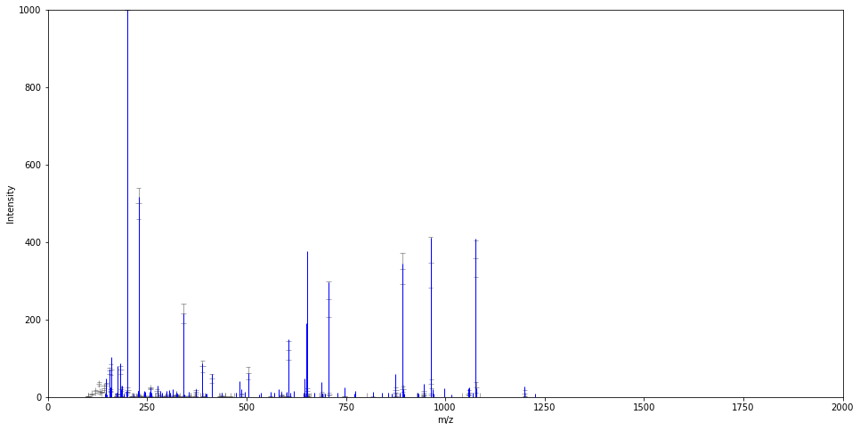
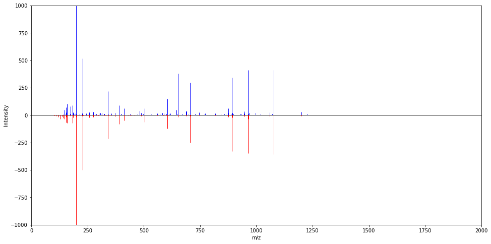
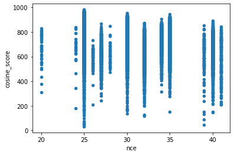
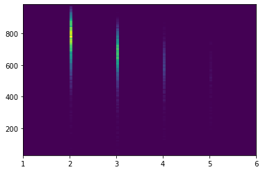
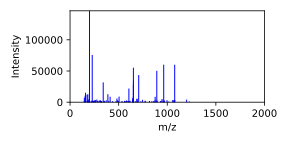

[1]:
%matplotlib inline
import matplotlib.pyplot as plt
from masskit.data_specs.spectral_library import LibraryAccessor
import pandas as pd
import masskit.utils.index as msui
import masskit.spectrum.join as mssj
import masskit.peptide.spectrum_generator as msps
pd.set_option("display.max_columns", None)
Read and analyze predicted spectra¶
[2]:
df = pd.read_pickle("../../../tests/data/FlipFlop183_uniq_220422.pkl")
# add in theoretical spectrum column
msps.add_theoretical_spectra(df, 'theoretical_spectrum')
# make iterable maps over the spectra
exp_spectra = msui.PandasLibraryMap(df)
pred_spectra = msui.PandasLibraryMap(df, column_name='predicted_spectrum')
theo_spectra = msui.PandasLibraryMap(df, column_name='theoretical_spectrum')
Join experimental, predicted and theoretical spectra by matching peaks¶
[3]:
j3 = mssj.ThreewayJoin(exp_spectra, pred_spectra, theo_spectra)
j3.do_join()
df_join = j3.to_pandas()
Examine join results¶
[4]:
df_join.head(100)
[4]:
| exp_id | pred_id | theo_id | exp_peak_index | pred_peak_index | theo_peak_index | exp_mz | exp_intensity | pred_mz | pred_intensity | theo_mz | pred_stddev | z_score | ev | charge | cosine_score | peptide_length | num_neg_aa | num_pos_aa | cterm_aa | ptm | ion_type | product_charge | isotope | ion_subtype | position | end_position | aa_before | aa_after | ptm_before | ptm_after | |
|---|---|---|---|---|---|---|---|---|---|---|---|---|---|---|---|---|---|---|---|---|---|---|---|---|---|---|---|---|---|---|---|
| 0 | 0 | 0 | 0 | 0 | <NA> | <NA> | 116.5715 | 0.006924 | <NA> | <NA> | <NA> | <NA> | <NA> | 45.0 | 2 | 585.724365 | 14 | 1 | 1 | R | 0 | NaN | <NA> | <NA> | <NA> | <NA> | <NA> | NaN | NaN | NaN | NaN |
| 1 | 0 | 0 | 0 | 1 | 6 | 30 | 120.0806 | 0.038769 | 120.1 | 0.076752 | 120.0808 | 0.025167 | -1.509269 | 45.0 | 2 | 585.724365 | 14 | 1 | 1 | R | 0 | immonium | 1 | 0 | IFA | <NA> | <NA> | NaN | NaN | NaN | NaN |
| 2 | 0 | 0 | 0 | 2 | <NA> | <NA> | 121.3951 | 0.007055 | <NA> | <NA> | <NA> | <NA> | <NA> | 45.0 | 2 | 585.724365 | 14 | 1 | 1 | R | 0 | NaN | <NA> | <NA> | <NA> | <NA> | <NA> | NaN | NaN | NaN | NaN |
| 3 | 0 | 0 | 0 | 3 | <NA> | <NA> | 127.626 | 0.008457 | <NA> | <NA> | <NA> | <NA> | <NA> | 45.0 | 2 | 585.724365 | 14 | 1 | 1 | R | 0 | NaN | <NA> | <NA> | <NA> | <NA> | <NA> | NaN | NaN | NaN | NaN |
| 4 | 0 | 0 | 0 | 4 | 12 | <NA> | 141.1022 | 0.034642 | 141.1 | 0.031227 | <NA> | 0.006905 | 0.494631 | 45.0 | 2 | 585.724365 | 14 | 1 | 1 | R | 0 | NaN | <NA> | <NA> | <NA> | <NA> | <NA> | NaN | NaN | NaN | NaN |
| ... | ... | ... | ... | ... | ... | ... | ... | ... | ... | ... | ... | ... | ... | ... | ... | ... | ... | ... | ... | ... | ... | ... | ... | ... | ... | ... | ... | ... | ... | ... | ... |
| 95 | 0 | 0 | 0 | 95 | 163 | 262 | 717.3718 | 0.148742 | 717.4 | 0.047838 | 717.371934 | 0.014855 | 6.792667 | 45.0 | 2 | 585.724365 | 14 | 1 | 1 | R | 0 | y | 1 | 1 | <NA> | 7 | <NA> | A | I | NaN | NaN |
| 96 | 0 | 0 | 0 | 96 | <NA> | <NA> | 782.7312 | 0.00643 | <NA> | <NA> | <NA> | <NA> | <NA> | 45.0 | 2 | 585.724365 | 14 | 1 | 1 | R | 0 | NaN | <NA> | <NA> | <NA> | <NA> | <NA> | NaN | NaN | NaN | NaN |
| 97 | 0 | 0 | 0 | 97 | 172 | 278 | 812.424 | 0.022945 | 812.4 | 0.004205 | 812.426094 | 0.002039 | 9.191735 | 45.0 | 2 | 585.724365 | 14 | 1 | 1 | R | 0 | y | 1 | 0 | NH3 | 8 | <NA> | I | G | NaN | NaN |
| 98 | 0 | 0 | 0 | 98 | 173 | 285 | 829.4534 | 0.313579 | 829.4 | 0.000969 | 829.452643 | 0.000818 | 382.262535 | 45.0 | 2 | 585.724365 | 14 | 1 | 1 | R | 0 | y | 1 | 0 | <NA> | 8 | <NA> | I | G | NaN | NaN |
| 99 | 0 | 0 | 0 | 99 | 175 | 286 | 830.456 | 0.120345 | 830.4 | 0.000174 | 830.455998 | 0.000097 | 1241.207879 | 45.0 | 2 | 585.724365 | 14 | 1 | 1 | R | 0 | y | 1 | 1 | <NA> | 8 | <NA> | I | G | NaN | NaN |
100 rows × 31 columns
Examine join results of phosphopeptides¶
[5]:
df_join.query('ptm == 21').head(100)
[5]:
| exp_id | pred_id | theo_id | exp_peak_index | pred_peak_index | theo_peak_index | exp_mz | exp_intensity | pred_mz | pred_intensity | theo_mz | pred_stddev | z_score | ev | charge | cosine_score | peptide_length | num_neg_aa | num_pos_aa | cterm_aa | ptm | ion_type | product_charge | isotope | ion_subtype | position | end_position | aa_before | aa_after | ptm_before | ptm_after | |
|---|---|---|---|---|---|---|---|---|---|---|---|---|---|---|---|---|---|---|---|---|---|---|---|---|---|---|---|---|---|---|---|
| 467197 | 1323 | 1323 | 1323 | 0 | 1 | 20 | 102.0554 | 0.043217 | 102.1 | 0.015513 | 102.055 | 0.008051 | 3.441178 | 32.0 | 2 | 633.076599 | 12 | 3 | 1 | K | 21 | immonium | 1 | 0 | IEA | <NA> | <NA> | NaN | NaN | NaN | NaN |
| 467198 | 1323 | 1323 | 1323 | 1 | 2 | 22 | 104.0533 | 0.022147 | 104.1 | 0.004737 | 104.0534 | 0.00351 | 4.960566 | 32.0 | 2 | 633.076599 | 12 | 3 | 1 | K | 21 | immonium | 1 | 0 | IMA | <NA> | <NA> | NaN | NaN | NaN | NaN |
| 467199 | 1323 | 1323 | 1323 | 2 | <NA> | <NA> | 121.0291 | 0.02663 | <NA> | <NA> | <NA> | <NA> | <NA> | 32.0 | 2 | 633.076599 | 12 | 3 | 1 | K | 21 | NaN | <NA> | <NA> | <NA> | <NA> | <NA> | NaN | NaN | NaN | NaN |
| 467200 | 1323 | 1323 | 1323 | 3 | 8 | <NA> | 126.0556 | 0.034801 | 126.1 | 0.000351 | <NA> | 0.000276 | 124.762839 | 32.0 | 2 | 633.076599 | 12 | 3 | 1 | K | 21 | NaN | <NA> | <NA> | <NA> | <NA> | <NA> | NaN | NaN | NaN | NaN |
| 467201 | 1323 | 1323 | 1323 | 4 | <NA> | <NA> | 126.2552 | 0.026217 | <NA> | <NA> | <NA> | <NA> | <NA> | 32.0 | 2 | 633.076599 | 12 | 3 | 1 | K | 21 | NaN | <NA> | <NA> | <NA> | <NA> | <NA> | NaN | NaN | NaN | NaN |
| ... | ... | ... | ... | ... | ... | ... | ... | ... | ... | ... | ... | ... | ... | ... | ... | ... | ... | ... | ... | ... | ... | ... | ... | ... | ... | ... | ... | ... | ... | ... | ... |
| 467292 | 1323 | 1323 | 1323 | <NA> | 34 | <NA> | <NA> | <NA> | 212.1 | 0.003309 | <NA> | 0.002391 | <NA> | 32.0 | 2 | 633.076599 | 12 | 3 | 1 | K | 21 | NaN | <NA> | <NA> | <NA> | <NA> | <NA> | NaN | NaN | NaN | NaN |
| 467293 | 1323 | 1323 | 1323 | <NA> | 35 | <NA> | <NA> | <NA> | 213.1 | 0.00077 | <NA> | 0.00049 | <NA> | 32.0 | 2 | 633.076599 | 12 | 3 | 1 | K | 21 | NaN | <NA> | <NA> | <NA> | <NA> | <NA> | NaN | NaN | NaN | NaN |
| 467294 | 1323 | 1323 | 1323 | <NA> | 36 | <NA> | <NA> | <NA> | 215.1 | 0.000436 | <NA> | 0.000406 | <NA> | 32.0 | 2 | 633.076599 | 12 | 3 | 1 | K | 21 | NaN | <NA> | <NA> | <NA> | <NA> | <NA> | NaN | NaN | NaN | NaN |
| 467295 | 1323 | 1323 | 1323 | <NA> | 37 | <NA> | <NA> | <NA> | 216.1 | 0.010032 | <NA> | 0.008176 | <NA> | 32.0 | 2 | 633.076599 | 12 | 3 | 1 | K | 21 | NaN | <NA> | <NA> | <NA> | <NA> | <NA> | NaN | NaN | NaN | NaN |
| 467296 | 1323 | 1323 | 1323 | <NA> | 39 | <NA> | <NA> | <NA> | 227.1 | 0.002694 | <NA> | 0.002119 | <NA> | 32.0 | 2 | 633.076599 | 12 | 3 | 1 | K | 21 | NaN | <NA> | <NA> | <NA> | <NA> | <NA> | NaN | NaN | NaN | NaN |
100 rows × 31 columns
Examine join results of peptides that do not end in K or R¶
[6]:
df_join.query('cterm_aa not in["K", "R"]').head(100)
[6]:
| exp_id | pred_id | theo_id | exp_peak_index | pred_peak_index | theo_peak_index | exp_mz | exp_intensity | pred_mz | pred_intensity | theo_mz | pred_stddev | z_score | ev | charge | cosine_score | peptide_length | num_neg_aa | num_pos_aa | cterm_aa | ptm | ion_type | product_charge | isotope | ion_subtype | position | end_position | aa_before | aa_after | ptm_before | ptm_after | |
|---|---|---|---|---|---|---|---|---|---|---|---|---|---|---|---|---|---|---|---|---|---|---|---|---|---|---|---|---|---|---|---|
| 32806 | 92 | 92 | 92 | 0 | 36 | <NA> | 240.0976 | 0.05831 | 240.1 | 0.030693 | <NA> | 0.018143 | 1.522204 | 40.0 | 3 | 375.432617 | 27 | 1 | 1 | Q | 0 | NaN | <NA> | <NA> | <NA> | <NA> | <NA> | NaN | NaN | NaN | NaN |
| 32807 | 92 | 92 | 92 | 1 | 37 | <NA> | 241.0803 | 0.056933 | 241.1 | 0.033461 | <NA> | 0.037932 | 0.618797 | 40.0 | 3 | 375.432617 | 27 | 1 | 1 | Q | 0 | NaN | <NA> | <NA> | <NA> | <NA> | <NA> | NaN | NaN | NaN | NaN |
| 32808 | 92 | 92 | 92 | 2 | 41 | 131 | 257.1233 | 0.417809 | 257.1 | 0.422641 | 257.124432 | 0.335987 | -0.014384 | 40.0 | 3 | 375.432617 | 27 | 1 | 1 | Q | 0 | y | 1 | 0 | H2O | 2 | <NA> | NaN | T | NaN | NaN |
| 32809 | 92 | 92 | 92 | 3 | 42 | 133 | 258.1075 | 0.293561 | 258.1 | 0.583013 | 258.108448 | 0.354833 | -0.81574 | 40.0 | 3 | 375.432617 | 27 | 1 | 1 | Q | 0 | y | 1 | 0 | NH3 | 2 | <NA> | NaN | T | NaN | NaN |
| 32810 | 92 | 92 | 92 | 4 | <NA> | <NA> | 261.9867 | 0.030825 | <NA> | <NA> | <NA> | <NA> | <NA> | 40.0 | 3 | 375.432617 | 27 | 1 | 1 | Q | 0 | NaN | <NA> | <NA> | <NA> | <NA> | <NA> | NaN | NaN | NaN | NaN |
| ... | ... | ... | ... | ... | ... | ... | ... | ... | ... | ... | ... | ... | ... | ... | ... | ... | ... | ... | ... | ... | ... | ... | ... | ... | ... | ... | ... | ... | ... | ... | ... |
| 32901 | 92 | 92 | 92 | 95 | 320 | <NA> | 1313.6226 | 0.347608 | 1313.6 | 0.029375 | <NA> | 0.039879 | 7.980009 | 40.0 | 3 | 375.432617 | 27 | 1 | 1 | Q | 0 | NaN | <NA> | <NA> | <NA> | <NA> | <NA> | NaN | NaN | NaN | NaN |
| 32902 | 92 | 92 | 92 | 96 | 321 | 540 | 1314.1073 | 0.418142 | 1314.1 | 0.044482 | 1314.108774 | 0.069938 | 5.342708 | 40.0 | 3 | 375.432617 | 27 | 1 | 1 | Q | 0 | b | 2 | 1 | <NA> | 24 | <NA> | N | Y | NaN | NaN |
| 32903 | 92 | 92 | 92 | 97 | 322 | <NA> | 1314.6064 | 0.156002 | 1314.6 | 0.032953 | <NA> | 0.067247 | 1.829811 | 40.0 | 3 | 375.432617 | 27 | 1 | 1 | Q | 0 | NaN | <NA> | <NA> | <NA> | <NA> | <NA> | NaN | NaN | NaN | NaN |
| 32904 | 92 | 92 | 92 | 98 | <NA> | <NA> | 1365.6086 | 0.062174 | <NA> | <NA> | <NA> | <NA> | <NA> | 40.0 | 3 | 375.432617 | 27 | 1 | 1 | Q | 0 | NaN | <NA> | <NA> | <NA> | <NA> | <NA> | NaN | NaN | NaN | NaN |
| 32905 | 92 | 92 | 92 | 99 | 339 | <NA> | 1373.6221 | 0.170367 | 1373.6 | 0.042433 | <NA> | 0.056629 | 2.259149 | 40.0 | 3 | 375.432617 | 27 | 1 | 1 | Q | 0 | NaN | <NA> | <NA> | <NA> | <NA> | <NA> | NaN | NaN | NaN | NaN |
100 rows × 31 columns
[7]:
df_join.columns
[7]:
Index(['exp_id', 'pred_id', 'theo_id', 'exp_peak_index', 'pred_peak_index',
'theo_peak_index', 'exp_mz', 'exp_intensity', 'pred_mz',
'pred_intensity', 'theo_mz', 'pred_stddev', 'z_score', 'ev', 'charge',
'cosine_score', 'peptide_length', 'num_neg_aa', 'num_pos_aa',
'cterm_aa', 'ptm', 'ion_type', 'product_charge', 'isotope',
'ion_subtype', 'position', 'end_position', 'aa_before', 'aa_after',
'ptm_before', 'ptm_after'],
dtype='object')
Query on ion annotations¶
Mean intensity for b ions with charge 1¶
[8]:
df_join.query('ion_type == "b" and product_charge == 1')['exp_intensity'].mean()
[8]:
0.09583703113652287
Mean z score for b ions with charge 1¶
[9]:
df_join.query('ion_type == "b" and product_charge == 1 and pred_intensity < 0.05')['z_score'].mean()
[9]:
6.158208049289118
Mean z score for ions with one carbon 13¶
[10]:
df_join.query('isotope == 1 and pred_intensity < 0.05')['z_score'].mean()
[10]:
7.60065305984468
Mean z score for immonium ions¶
Note that the type of immonium ion is kept in the neutral_loss column¶
[11]:
df_join.query('ion_type == "immonium" and pred_intensity < 0.05')['z_score'].mean()
[11]:
7.4534606438435524
Mean z score for internal ions¶
[12]:
df_join.query('ion_type == "internalb" and pred_intensity < 0.05')['z_score'].mean()
[12]:
6.408632347078326
Mean z score for parent ions¶
[13]:
df_join.query('ion_type == "parent" and pred_intensity < 0.05')['z_score'].mean()
[13]:
6.5820922264823345
Plot two spectra, one with error bars¶
[14]:
fig, ax = plt.subplots(figsize=(16, 8))
# select spectra from the 2nd row of the datafram
experimental_spectrum = df.iloc[1]['spectrum']
predicted_spectrum = df.iloc[1]['predicted_spectrum']
experimental_spectrum.plot(ax, predicted_spectrum, normalize=1000, mirror=False, plot_stddev=True)

Plot two spectra with a mirror plot, no error bars¶
[15]:
fig, ax = plt.subplots(figsize=(16, 8))
experimental_spectrum.plot(ax, predicted_spectrum, normalize=1000, mirror=True)

Plot relationship between cosine score and various spectrum properties¶
[16]:
df.plot.scatter('nce', 'cosine_score')
plt.show()

[17]:
plt.hist2d(df['charge'], df['cosine_score'], bins = 100)
plt.show()

[18]:
df['predicted_spectrum'].iloc[1]
[18]:

[19]:
df['spectrum'].iloc[1]
[19]:

Compute the cosine score, which automatically changes the mass tolerance of the experimental spectra to evenly spaced bins instead of ppm¶
[20]:
# get the experimental spectrum from the 5th row
experimental_spectrum = df['spectrum'].iloc[1]
# get the predicted spectrum from the 5th row
predicted_spectrum = df['predicted_spectrum'].iloc[1]
# convert the experimental spectra, which has ions in +/- 10ppm bins into a spectrum with evenly spaced bins
# that are the same size as the
df['predicted_spectrum'].iloc[1].cosine_score(df['spectrum'].iloc[1])
[20]:
682.8751554541735
Access mz, intensity, and std deviation of the intensity for an example spectrum¶
[21]:
print(df['predicted_spectrum'].iloc[1].products.mz)
print(df['predicted_spectrum'].iloc[1].products.intensity)
print(df['predicted_spectrum'].iloc[1].products.stddev)
[ 101.1 102.1 110.1 120.1 129.1 130.1 136.1 141.1 143.1 147.1
155.1 157.1 159.1 169.1 171.1 173.1 175.1 183.1 185.1 185.2
186.1 187.1 197.1 199.2 200.1 201.1 211.1 213.2 215.1 226.1
227.2 228.1 229.1 230.1 240.1 243.1 244.1 244.2 257.2 258.1
260.1 270.1 272.2 275.2 279.2 282.2 288.1 296.2 298.2 299.2
308.2 313.2 323.2 324.2 326.2 331.1 341.2 342.2 354.2 355.2
358.1 359.2 371.2 372.2 384.3 389.2 390.2 395.2 412.3 413.3
431.2 432.2 437.7 438.2 446.7 447.2 459.2 469.2 472.3 486.2
487.2 504.2 504.3 505.2 560.2 570.3 587.3 588.3 598.3 600.3
605.3 606.3 643.3 643.4 644.3 651.3 651.4 651.8 652.3 652.4
660.4 671.3 688.3 689.3 706.3 706.4 707.3 746.3 802.4 817.4
857.4 874.4 875.4 876.4 892.4 893.4 928.4 930.4 945.4 945.5
946.4 946.5 947.4 963.4 963.5 964.4 964.5 1041.5 1058.5 1059.5
1060.5 1076.5 1076.6 1077.5 1086.5 1199.6 1200.6]
[1.80569640e+00 1.13138043e+00 7.09895767e+00 1.50447761e+01
3.41836787e+01 1.29840373e+01 1.22303123e+01 2.36604700e+01
4.30689418e-01 3.29291285e+01 6.76000473e+01 1.58475517e+01
7.11269910e+01 2.35122952e-01 4.26483373e-01 1.29914913e+00
6.45464468e+00 7.00947230e+01 1.98784264e+01 4.38904502e-01
1.16158741e-01 1.95074464e+00 2.35150672e-01 1.04063981e+01
9.99000008e+02 1.86165689e+01 1.78077297e+00 1.47670396e-01
7.88578335e-01 4.36842939e-01 6.51051081e+00 4.99957247e+02
3.45702844e+00 1.22628794e+00 6.14570812e-01 2.97852322e+00
2.62213865e-01 4.03182783e-01 2.49004462e+00 2.17523992e+01
3.45175005e-01 1.16670541e-01 2.76266801e-01 1.53532223e+01
1.40013646e-01 4.03130640e+00 1.57390753e+00 1.18324942e+00
6.81957455e-01 4.83090816e+00 2.82409295e-01 2.87350396e+00
4.57933807e+00 5.04119183e+00 1.51603536e+00 9.16047698e-01
2.15399399e+02 2.45024676e+00 4.69610980e-01 1.94856536e+00
1.02260256e-01 3.97610387e-01 2.32052331e+00 1.36700666e+01
2.19294686e-01 7.89407499e+01 7.74351442e-01 6.35643568e-01
4.84524548e+01 2.54807329e-01 1.08488301e-01 1.09939306e+00
3.14603882e-01 1.98243994e+00 1.01052586e+00 1.15573543e-01
7.31819431e-01 1.71211633e-01 2.38256259e-01 1.94538287e-01
5.36491133e+00 6.05948867e+01 1.08230546e-01 3.14456461e-01
1.28250604e+00 1.06215906e-01 1.10074493e+00 5.07261724e+00
5.26251060e-01 6.70723246e-01 1.20904986e+02 1.93322101e+00
3.63151090e-01 1.13052975e-01 1.04580000e-01 2.95368669e+00
2.63342736e+00 1.71449087e+00 1.65483199e+01 5.76912533e+00
1.82616117e-01 2.94629640e-01 5.04221483e+00 9.05636196e+00
2.52552773e+02 1.42972771e-01 7.55964998e+00 7.18311324e-01
1.31387952e-01 6.55669605e-01 3.15028906e-01 6.90590017e+00
1.75982772e+01 5.27071450e-01 3.31167784e+02 2.06331024e+01
2.32618002e-01 1.05844357e-01 3.81248376e+00 4.58752086e-01
1.21358918e+01 3.26348790e-01 1.10278032e-01 4.43420612e+00
3.47310256e+02 1.45319238e-01 3.32285240e+01 2.29238395e-01
5.83643088e+00 1.16137490e+01 2.83011455e-01 3.56975944e+02
3.71045913e-01 2.38939536e+01 1.35562128e-01 9.36785106e+00
4.23299374e-01]
[5.77813713e-01 3.12706640e-01 1.40091182e+00 3.21576450e+00
5.16561742e+00 3.70641593e+00 1.97781202e+00 4.85640626e+00
1.07918903e-01 4.02805946e+00 7.96410282e+00 3.47404429e+00
1.43065865e+01 7.32157626e-02 7.83655186e-02 1.84613794e-01
1.16856836e+00 1.06818555e+01 3.92114188e+00 1.24017394e-01
7.69127975e-02 5.40853563e-01 6.34416391e-02 2.90989929e+00
3.04496858e-05 5.32795708e+00 6.39152687e-01 5.10725355e-02
1.35533683e-01 4.11968306e-01 2.60981514e+00 4.03027109e+01
1.36828990e+00 6.95801168e-01 2.14433327e-01 1.14635443e+00
1.35090937e-01 9.25212556e-02 1.26128701e+00 2.59022202e+00
3.47550849e-01 1.13989202e-01 5.20455757e-01 4.68147404e+00
1.30358537e-01 2.58643325e+00 1.21327908e+00 7.16701447e-01
4.48749518e-01 2.42145877e+00 3.65541944e-01 1.50145324e+00
2.16668328e+00 2.01459157e+00 1.31666981e+00 1.08755222e+00
2.49159710e+01 1.16400196e+00 4.37000875e-01 2.16388986e+00
1.44898685e-01 3.55830076e-01 1.47192262e+00 5.19068871e+00
1.08572893e-01 1.43857658e+01 4.81924631e-01 7.74273469e-01
1.11531750e+01 1.48669648e-01 1.40780127e-01 1.12000975e+00
4.03758768e-01 1.02173733e+00 7.09494406e-01 1.45309576e-01
6.64708845e-01 1.43925310e-01 2.77460640e-01 1.12897080e-01
2.53720958e+00 1.60247458e+01 1.27854213e-01 2.44695453e-01
8.89936714e-01 5.73524141e-02 7.29922758e-01 1.98945199e+00
3.40279651e-01 8.02702920e-01 2.42392488e+01 8.72042094e-01
2.83251163e-01 8.37129005e-02 6.84136287e-02 2.02874339e+00
1.91598624e+00 8.27352097e-01 6.80585889e+00 2.15465042e+00
2.42990019e-01 1.72736813e-01 3.57224745e+00 4.77330461e+00
4.60551792e+01 1.86412244e-01 4.18531277e+00 6.91990053e-01
2.37414970e-01 5.27319019e-01 3.47273941e-01 4.44143536e+00
7.06596290e+00 2.82352889e-01 4.07284438e+01 7.58350665e+00
1.91570028e-01 1.88022274e-01 2.93410713e+00 3.68986398e-01
4.56547675e+00 3.18961322e-01 1.11751449e-01 4.66311854e+00
6.54771241e+01 1.28277538e-01 1.12987937e+01 3.89332267e-01
2.25814708e+00 6.90606013e+00 2.15173752e-01 4.78556238e+01
2.70256820e-01 1.35841861e+01 2.23368407e-01 7.88633596e+00
3.52776215e-01]
Save predicted spectra as msp¶
All predicted spectra¶
[22]:
df.lib.to_msp('all.msp', spectrum_column='predicted_spectrum')
The predicted spectrum at row 0¶
[23]:
df.iloc[[0]].lib.to_msp('single.msp', spectrum_column='predicted_spectrum')